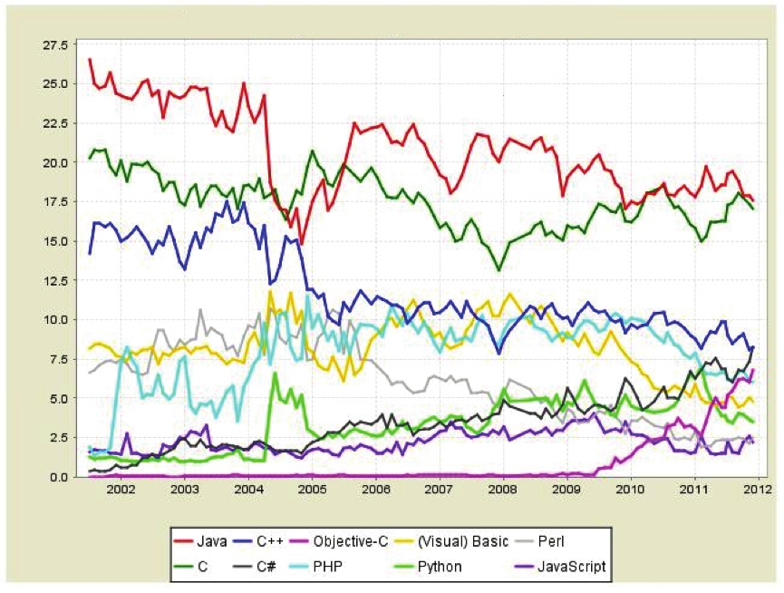

编程语言已经非常多，偏性能敏感的编译型语言有 C、C++、Java、C#、Delphi和Objective-C 等，偏快速业务开发的动态解析型语言有PHP、Python、Perl、Ruby、JavaScript和Lua等，面向特定领域的语言有Erlang、R和MATLAB等，那么我们为什么需要 Go这样一门新语言呢？
在2000年前的单机时代，C语言是编程之王。随着机器性能的提升、软件规模与复杂度的提高，Java逐步取代了C的位置。尽管看起来Java已经深获人心，但Java编程的体验并未尽如人意。 历年来的编程语言排行榜显示，Java语言的市场份额在逐步下跌，并趋近于C语言的水平，显示了这门语言后劲不足。

Go语言官方自称，之所以开发Go 语言，是因为“近10年来开发程序之难让我们有点沮丧”。 这一定位暗示了Go语言希望取代C和Java的地位，成为最流行的通用开发语言。
Go希望成为互联网时代的C语言。多数系统级语言（包括Java和C#）的根本编程哲学来源于C++，将C++的面向对象进一步发扬光大。但是Go语言的设计者却有不同的看法，他们认为 C++ 真的没啥好学的，值得学习的是C语言。C语言经久不衰的根源是它足够简单。因此Go 语言也要足够简单！
那么，互联网时代的C语言需要考虑哪些关键问题呢？
首先，并行与分布式支持。多核化和集群化是互联网时代的典型特征。作为一个互联网时代的C语言，必须要让这门语言操作多核计算机与计算机集群如同操作单机一样容易。
其次，软件工程支持。工程规模不断扩大是产业发展的必然趋势。单机时代语言可以只关心问题本身的解决，而互联网时代的C语言还需要考虑软件品质保障和团队协作相关的话题。
最后，编程哲学的重塑。计算机软件经历了数十年的发展，形成了面向对象等多种学术流派。什么才是最佳的编程实践？作为互联网时代的C语言，需要回答这个问题。
接下来我们来聊聊Go语言在这些话题上是如何应对的。
多核化和集群化是互联网时代的典型特征，那语言需要哪些特性来应对这些特征呢？ 第一个话题是并发执行的“执行体”。执行体是个抽象的概念，在操作系统层面有多个概念 与之对应，比如操作系统自己掌管的进程（process）、进程内的线程（thread）以及进程内的协程（coroutine，也叫轻量级线程）。多数语言在语法层面并不直接支持协程，而通过库的方式支持的协程的功能也并不完整，比如仅仅提供协程的创建、销毁与切换等能力。如果在这样的协程中调用一个同步IO操作，比如网络通信、本地文件读写，都会阻塞其他的并发执行协程，从而无法真正达到协程本身期望达到的目标。
Go语言在语言级别支持协程，叫goroutine。Go语言标准库提供的所有系统调用（syscall）操作，当然也包括所有同步IO操作，都会出让CPU给其他goroutine，这让事情变得非常简单。我们对比一下Java和Go，近距离观摩下两者对“执行体”的支持。
为了简化，我们在样例中使用的是Java标准库中的线程，而不是协程，具体代码如下：
public class MyThread implements Runnable {
String arg;
public MyThread(String a) {
arg = a;
}
public void run() {
// ...
}
public static void main(String[] args) {
new Thread(new MyThread("test")).start();
// ...
}
}
相同功能的代码,在Go语言中是这样的:
func run(arg string) {
// ...
}
func main() {
go run("test")
...
}
对比非常鲜明。我相信你已经明白为什么Go语言会叫Go语言了:Go语言献给这个时代最好 的礼物,就是加了go这个关键字。当然也有人会说,叫Go语言是因为它是Google出的。好吧, 这也是个不错的闲聊主题。
第二个话题是“执行体间的通信”。执行体间的通信包含几个方式:
先说“执行体之间的互斥与同步”。当执行体之间存在共享资源(一般是共享内存)时,为 保证内存访问逻辑的确定性,需要对访问该共享资源的相关执行体进行互斥。当多个执行体之间 的逻辑存在时序上的依赖时,也往往需要在执行体之间进行同步。互斥与同步是执行体间最基础 的交互方式。
多数语言在库层面提供了线程间的互斥与同步支持,那么协程之间的互斥与同步呢?呃,不 好意思,没有。事实上多数语言标准库中连协程都是看不到的。
再说“执行体之间的消息传递”。在并发编程模型的选择上,有两个流派,一个是共享内存 模型,一个是消息传递模型。多数传统语言选择了前者,少数语言选择后者,其中选择“消息传 递模型”的最典型代表是Erlang语言。业界有专门的术语叫“Erlang风格的并发模型”,其主体思 想是两点:一是“轻量级的进程(Erlang中‘进程’这个术语就是我们上面说的‘执行体’)”,二 是“消息乃进程间通信的唯一方式”。当执行体之间需要相互传递消息时,通常需要基于一个消 息队列(message queue)或者进程邮箱(process mail box)这样的设施进行通信。
Go语言推荐采用“Erlang风格的并发模型”的编程范式,尽管传统的“共享内存模型”仍然 被保留,允许适度地使用。在Go语言中内置了消息队列的支持,只不过它叫通道(channel)。两个goroutine之间可以通过通道来进行交互。
单机时代的语言可以只关心问题本身的解决,但是随着工程规模的不断扩大,软件复杂度的 不断增加,软件工程也成为语言设计层面要考虑的重要课题。多数软件需要一个团队共同去完 成,在团队协作的过程中,人们需要建立统一的交互语言来降低沟通的成本。规范化体现在多 个层面,如:
Go语言很可能是第一个将代码风格强制统一的语言,例如Go语言要求public的变量必须以 大写字母开头,private变量则以小写字母开头,这种做法不仅免除了public、private关键 字,更重要的是统一了命名风格。
另外,Go语言对{ }应该怎么写进行了强制,比如以下风格是正确的:
if expression {
...
}
但下面这个写法就是错误的:
if expression
{
...
}
而C和Java语言中则对花括号的位置没有任何要求。哪种更有利,这个见仁见智。但很显然的是,所有的Go代码的花括号位置肯定是非常统一的。
最有意思的其实还是 Go 语言首创的错误处理规范:
f, err := os.Open(filename)
if err != nil {
log.Println("Open file failed:", err)
return
}
defer f.Close()
... //操作已经打开的f文件
这里有两个关键点。其一是defer关键字。defer语句的含义是不管程序是否出现异常,均 在函数退出时自动执行相关代码。在上面的例子中,正是因为有了defer,才使得无论后续是否会出现异常,都可以确保文件被正确关闭。其二是Go语言的函数允许返回多个值。大多数函数的最后一个返回值会为error类型,以在错误情况下返回详细信息。error类型只是一个系统内 置的interface,如下:
type error interface {
Error() string
}
有了error类型,程序出现错误的逻辑看起来就相当统一。
在Java中,你可能这样写代码来保证资源正确释放:
Connection conn = ...;
try {
Statement stmt = ...;
try {
ResultSet rset = ...;
try {
... // 正常代码
}
finally {
rset.close();
}
}
finally {
stmt.close();
}
}
finally {
conn.close();
}
完成同样的功能,相应的Go代码只需要写成这样:
conn := ...
defer conn.Close()
stmt := ...
defer stmt.Close()
rset := ...
defer rset.Close()
... // 正常代码
对比两段代码,Go语言处理错误的优势显而易见。当然,其实Go语言带给我们的惊喜还有 很多,后续有机会我们可以就某个更具体的话题详细展开来谈一谈。
计算机软件经历了数十年的发展,形成了多种学术流派,有面向过程编程、面向对象编程、 函数式编程、面向消息编程等,这些思想究竟孰优孰劣,众说纷纭。
C语言是纯过程式的,这和它产生的历史背景有关。Java语言则是激进的面向对象主义推崇 者,典型表现是它不能容忍体系里存在孤立的函数。而Go语言没有去否认任何一方,而是用批 判吸收的眼光,将所有编程思想做了一次梳理,融合众家之长,但时刻警惕特性复杂化,极力维 持语言特性的简洁,力求小而精。
从编程范式的角度来说,Go语言是变革派,而不是改良派。
对于C++、Java和C#等语言为代表的面向对象(OO)思想体系,Go语言总体来说持保守态 度,有限吸收。
首先,Go语言反对函数和操作符重载(overload),而C++、Java和C#都允许出现同名函数或 操作符,只要它们的参数列表不同。虽然重载解决了一小部分面向对象编程(OOP)的问题,但同样给这些语言带来了极大的负担。而Go语言有着完全不同的设计哲学,既然函数重载带来了 负担,并且这个特性并不对解决任何问题有显著的价值,那么Go就不提供它。
其次,Go语言支持类、类成员方法、类的组合,但反对继承,反对虚函数(virtual function) 和虚函数重载。确切地说,Go也提供了继承,只不过是采用了组合的文法来提供:
type Foo struct {
Base
...
}
func (foo *Foo) Bar() {
...
}
再次,Go语言也放弃了构造函数(constructor)和析构函数(destructor)。由于Go语言中没 有虚函数,也就没有vptr,支持构造函数和析构函数就没有太大的价值。本着“如果一个特性 并不对解决任何问题有显著的价值,那么Go就不提供它”的原则,构造函数和析构函数就这样 被Go语言的作者们干掉了。
在放弃了大量的OOP特性后,Go语言送上了一份非常棒的礼物:接口(interface)。你可能 会说,除了C这么原始的语言外,还有什么语言没有接口呢?是的,多数语言都提供接口,但它 们的接口都不同于Go语言的接口。
Go语言中的接口与其他语言最大的一点区别是它的非侵入性。在C++、Java和C#中,为了实 现一个接口,你需要从该接口继承,具体代码如下:
class Foo implements IFoo { // Java文法
...
}
class Foo : public IFoo { // C++文法
...
}
IFoo* foo = new Foo;
在Go语言中,实现类的时候无需从接口派生,具体代码如下:
type Foo struct { // Go 文法
...
}
var foo IFoo = new(Foo)
只要Foo实现了接口IFoo要求的所有方法,就实现了该接口,可以进行赋值。
Go语言的非侵入式接口,看似只是做了很小的文法调整,实则影响深远。
其一,Go语言的标准库再也不需要绘制类库的继承树图。你只需要知道这个类实现了哪些 方法,每个方法是啥含义就足够了。
其二,不用再纠结接口需要拆得多细才合理,比如我们实现了File类,它有下面这些方法:
Read(buf []byte) (n int, err error)
Write(buf []byte) (n int, err error)
Seek(off int64, whence int) (pos int64, err error)
Close() error
那么,到底是应该定义一个IFile接口,还是应该定义一系列的IReader、IWriter、 ISeeker和ICloser接口,然后让File从它们派生好呢?事实上,脱离了实际的用户场景,讨 论这两个设计哪个更好并无意义。问题在于,实现File类的时候,我怎么知道外部会如何用它呢?
其三,不用为了实现一个接口而专门导入一个包,而目的仅仅是引用其中的某个接口的定义。 在Go语言中,只要两个接口拥有相同的方法列表,那么它们就是等同的,可以相互赋值,如对 于以下两个接口,第一个接口:
package one
type ReadWriter interface {
Read(buf [] byte) (n int, err error)
Write(buf [] byte) (n int, err error)
}
第二个接口:
package two
type IStream interface {
Write(buf [] byte) (n int, err error)
Read(buf [] byte) (n int, err error)
}
这里我们定义了两个接口,一个叫one.ReadWriter,一个叫two.IStream,两者都定义 了Read()和Write()方法,只是定义的次序相反。one.ReadWriter先定义了Read()再定义 Write(),而two.IStream反之。 在Go语言中,这两个接口实际上并无区别,因为:
所以在Go语言中,为了引用另一个包中的接口而导入这个包的做法是不被推荐的。因为多 引用一个外部的包,就意味着更多的耦合。
除了OOP外,近年出现了一些小众的编程哲学,Go语言对这些思想亦有所吸收。例如,Go 语言接受了函数式编程的一些想法,支持匿名函数与闭包。再如,Go语言接受了以Erlang语言为 代表的面向消息编程思想,支持goroutine和通道,并推荐使用消息而不是共享内存来进行并发编 程。总体来说,Go语言是一个非常现代化的语言,精小但非常强大。
在十余年的技术生涯中,我接触过、使用过、喜爱过不同的编程语言,但总体而言,Go语 言的出现是最让我兴奋的事情。我个人对未来10年编程语言排行榜的趋势判断如下: